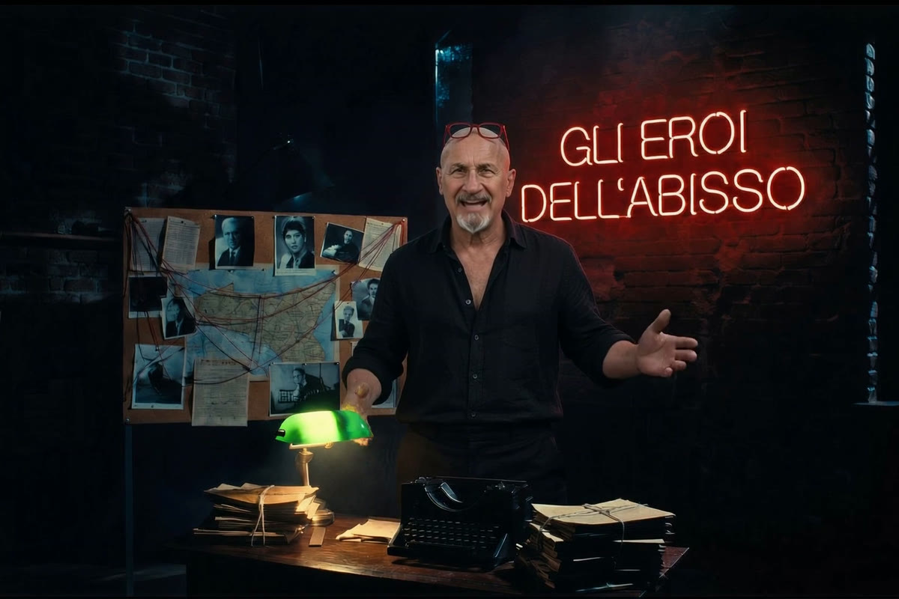

Cronaca · 6 novembre 2026
Corigliano-Rossano, revocati i domiciliari al sindaco Flavio Stasi

La gip di Catanzaro revoca la misura disposta il 28 ottobre nell'inchiesta antimafia sulla Sibaritide. Il sindaco, accusato di scambio elettorale politico-mafioso, resta indagato. Le motivazioni non sono ancora pubbliche.
di Franco Zanghì
Qualche giorno fa il sindaco di Corigliano-Rossano, Flavio Stasi, era finito agli arresti domiciliari in un'inchiesta antimafia. Il 5 novembre la giudice per le indagini preliminari di Catanzaro ha revocato la misura. L'inchiesta, però, non è chiusa: Stasi resta indagato.
L'arresto del 28 ottobre
Corigliano-Rossano è una città di quasi ottantamila abitanti sulla costa ionica della Calabria, nella piana di Sibari. Il 28 ottobre i carabinieri del Ros hanno eseguito un'ordinanza chiesta dalla Direzione distrettuale antimafia di Catanzaro contro le cosche della Sibaritide: 41 misure cautelari. Fra gli arrestati c'era anche il sindaco, ai domiciliari, con l'accusa di scambio elettorale politico-mafioso per le comunali del 2024, quelle che lo hanno rieletto.
Secondo l'accusa, un uomo ritenuto dagli inquirenti legato alle cosche di Rossano gli avrebbe procurato dei voti, attraverso un intermediario, in cambio della promessa di posti di lavoro per sé e per i suoi familiari.
L'interrogatorio e la revoca
Il 2 novembre, all'interrogatorio di garanzia, Stasi ha risposto alle domande e ha respinto le accuse. Ha detto di non conoscere l'uomo che, secondo l'accusa, gli avrebbe portato i voti, e ha consegnato una serie di atti amministrativi del Comune.
Il 5 novembre la giudice per le indagini preliminari di Catanzaro, Fabiana Giacchetti, ha revocato gli arresti domiciliari. Revocata anche la misura per Vincenzo Curia, l'uomo che secondo l'accusa avrebbe fatto da intermediario, e disposta la scarcerazione di Annibale Matalone, ritenuto dagli inquirenti legato alle cosche di Rossano. Per entrambi, come per il sindaco, vale la presunzione d'innocenza.
Che cosa ha scritto la giudice
Le motivazioni sono emerse il 6 novembre. Secondo la giudice i dati su cui l'ordinanza fondava la gravità indiziaria «vanno rivisitati alla luce di quanto dichiarato nel corso degli interrogatori», e le dichiarazioni degli indagati «creano un vulnus all'interno delle indagini, ponendo un dubbio sulla correttezza dell'impostazione accusatoria, minando la gravità indiziaria».
Nel suo interrogatorio Curia si è detto «simpatizzante per quanto riguarda la candidatura di Stasi» e ha riferito di essersi rivolto a Matalone «per procacciare un voto al Sindaco», sostenendo però di non essere stato «in alcun modo sollecitato dal sindaco in tal senso» e di avere millantato con Matalone una vicinanza al primo cittadino che non aveva mai avuto. Stasi ha detto di non conoscere Matalone e di avere con Curia rapporti limitati a questioni di lavoro. Su queste basi la giudice ha revocato le misure.
Che cosa succede adesso
La difesa aveva fatto ricorso al tribunale del Riesame, con l'udienza fissata per il 10 novembre: secondo le testate locali dovrebbe rinunciarci, perché la misura non c'è più. La Procura antimafia può ancora impugnare la revoca. Nei giorni dei domiciliari le funzioni del sindaco erano passate al vicesindaco; con la revoca, scrivono le testate locali, Stasi può tornare alla guida dell'amministrazione, salvo altri provvedimenti.
La revoca di una misura cautelare non chiude un'inchiesta. Flavio Stasi resta indagato per scambio elettorale politico-mafioso e, come tutti gli indagati di questa inchiesta, va considerato innocente fino alla sentenza definitiva.
Fonti
- Ansa, 5 novembre 2026
- Ansa, «Revoca domiciliari a Stasi, gip: dichiarazioni indagati creano vulnus», 6 novembre 2026
- LaC News24, 5 novembre 2026
- CosenzaPost, 5 novembre 2026
- CalabriaNews24, 5 novembre 2026
- il Lametino, 5 novembre 2026
- CosenzaChannel, 5 novembre 2026
Situazione giudiziaria aggiornata alla sera del 6 novembre 2026. La revoca di una misura cautelare non chiude l'inchiesta e non è un giudizio di merito: la procura antimafia può impugnarla.